§ MALIS: Decision Trees
Basically a way of codifying decisions as tree data structures. The tree has the same concepts as trees in basic data structures with:
- Root Node→ starting node of the tree
- Intermediate nodes → All the nodes that come after the root node that need to be parsed in a depthwise search
- Leaf Nodes → The terminal nodes of the tree
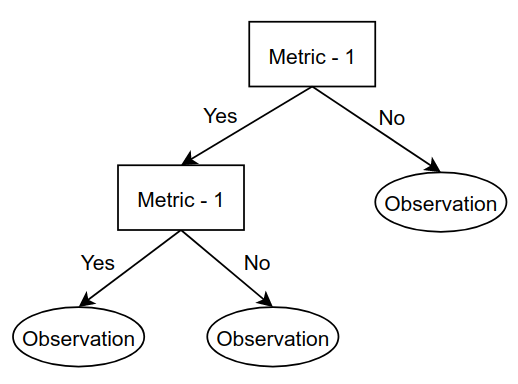
The main idea is to start from the root and traverse along the intermediate nodes to reach decisions on observations and actions.
§ Creating a Tree
Based on the video from, Let us predict heart disease based on metrics :
- Chest Pain
- Good Blood Circulation
- Blocked Arteries
and we have the following table:
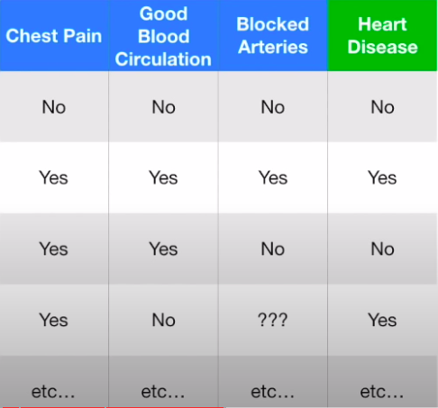
Let the observation nodes be represented as x/y, where x represents heart disease while y represents no heart disease. For chest pain, suppose we get the following observations from the labels:
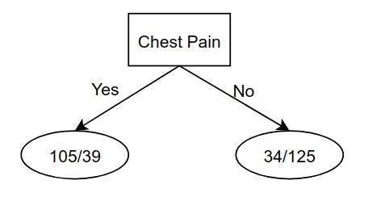
For Good blood circulation:
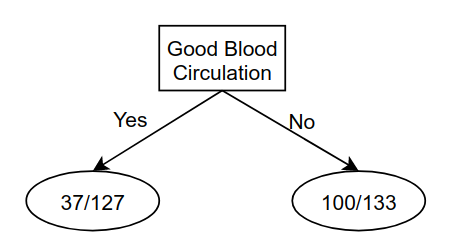
And for Blocked arteries:
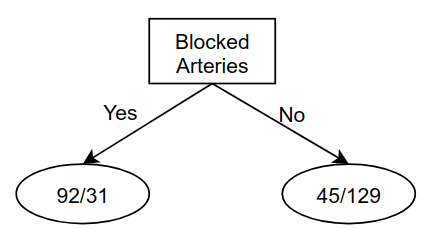
Here, the total number of patients for each of these metrics is different, since some patients did not have observations for all metrics. Now, since none of the leaf nodes have 100% observation on whether the patient has heart disease, they are considered impure → We need a way to measure and compare this impurity to determine which metric is better and use that as a higher level node.
§ Gini Impurity
The Gini impurity is mathematically written as :
G(s)=1−i=1∑Kpi(1−pi)
Here,
pi are the probabilities of the sub-observations → take one metric and divide it by total observations in that leaf node. In our example, for the case of chest pain, the gini for the leaf node corresponding to the observations that come when chest pain is detected, can be calculated as:
1−(105+39105)2−(105+3939)2=0.395
Similarly, the gini of the other leaf node for chest pain is:
1−(34+12534)2−(34+125125)2=0.336
Since the total number of heart patients in the leaf nodes for chest pain is not the same, we take a weighted average of Gini impurities as the Gini impurity for chest pain :
Gcp=(144+159144)0.395+(144+159159)0.336=0.364
Similary the coefficient blood circulation is →
GGBC=0.360 and the coefficient for blocked arteries is →
GBA=0.381
Since good blood circulation has the lowest Gini value, it has the lowest impurity → it separates the heart disease the best! Thus, we will use is as the root node, and so our tree is:
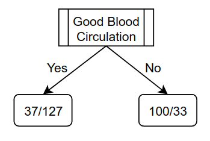
So, in our decision we start with looking at good blood circulation. If the patient has good blood circulation then there are 37 such patients wth heart disease and 127 without, and if they don't have good blood circulation, then 100 such patients with heart disease and 33 without. Now, in the left node we again compute the sub-trees for Chest pain and blocked arteries, out of these 37 patients
from the table to get the following possible branches:
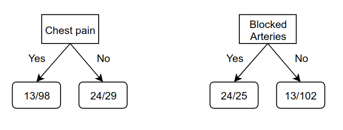
The Gini values are:
GCP=0.3GBA=0.290
Thus, blocked arteries is a better metric after Good blood circulation, and so we update it in the tree:
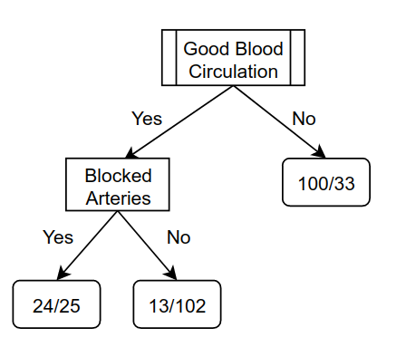
Now, we repeat this procedure for the left and right nodes of blocked arteries. For the left child of blocked arteries to get the chest pain values as:
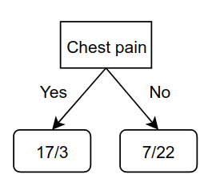
This will be added to the left child of blocked arteries. Ideally, we would repeat this procedure for the right child, but there is one important factor that comes into play here, which is that the Gini impurity of the right child of Blocked arteries is:
1−(13+10213)+(13+102102)=0.2
While the Gini for the chest pain in this case is:
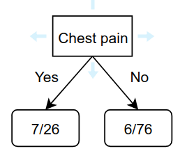
GCP=0.29
Thus, the right child of blocked arteries is by itself a better separator than chest pain, and so, we let it be! Hence, we can summarize the steps followed as:
- Calculate the Gini scores
- If the Gini of the node is lower, then there is no point separating patients and it becomes a leaf node.
- If separating the data improves the gini, then separate it with the separation of the lowest gini value
We repeat these steps for the right child of the root node, and the final tree comes out to be:
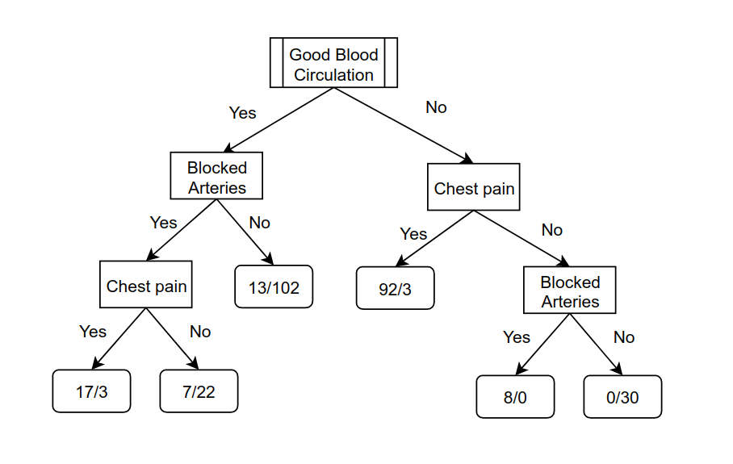
§ Other Impurities
Gini is just one of the ways to measure the impurities. It is used in the CART algorithm. Another measure for quantifying impurity is Entropy:
H(S)=−i∑pilog(pi)
It is primarily used to define information, which is defined in terms of the change in entropy. It used in the ID3 algorithm, which does similar stuff as described above. The basic idea of working with trees remains the same → Use an impurity function to determine if the node needs further improvement, and then improve it by asking the question that would lead to the best separation.
§ Feature Selection
If we are to follow the procedure described previously for trees, then the issue that comes is that of over-fitting and to deal with this, we can do feature selection to simplify the tree. For example, if chest pain in the previous example never gave an improved separation as compared to the leaf nodes, then we can just remove this feature and thus, the tree would only have good blood circulation adn blocked arteries. Similarly, we could also specify a threshold for separation saying if te gini is low than this threshold, then we consider the separation good and thus, if any feature is unable to separate below this threshold, we discard it!